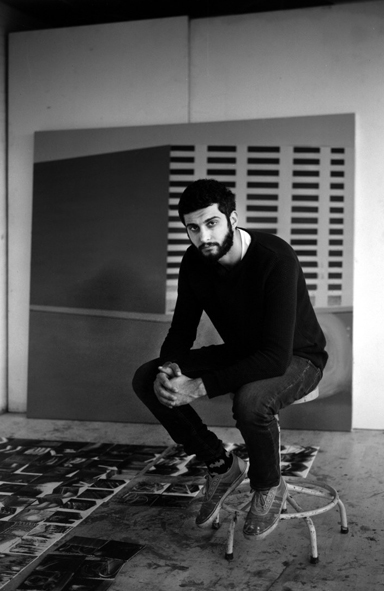

Taking myself as the starting point in which I think my interests relays, I am able to grasp some of the subjects and put them together with subjects that are influenced me as who I am. Things that matters me the most or random thoughts are combines in one image which I hope gives away the dynamical storyline of different aspects. One of them which I like to refer a lot is my identical heritage which is almost all the time the basic approach of my works.
Taking myself as the starting point in which I think my interests relays, I am able to grasp some of the subjects and put them together with subjects that are influenced me as who I am. Things that matters me the most or random thoughts are combines in one image which I hope gives away the dynamical storyline of different aspects. One of them which I like to refer a lot is my identical heritage which is almost all the time the basic approach of my works.
Rabi Koria CV click here.